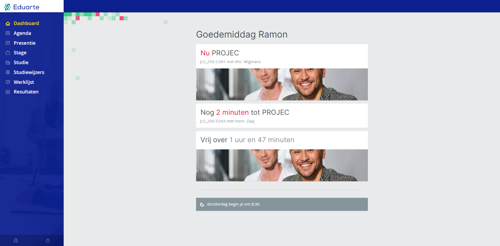
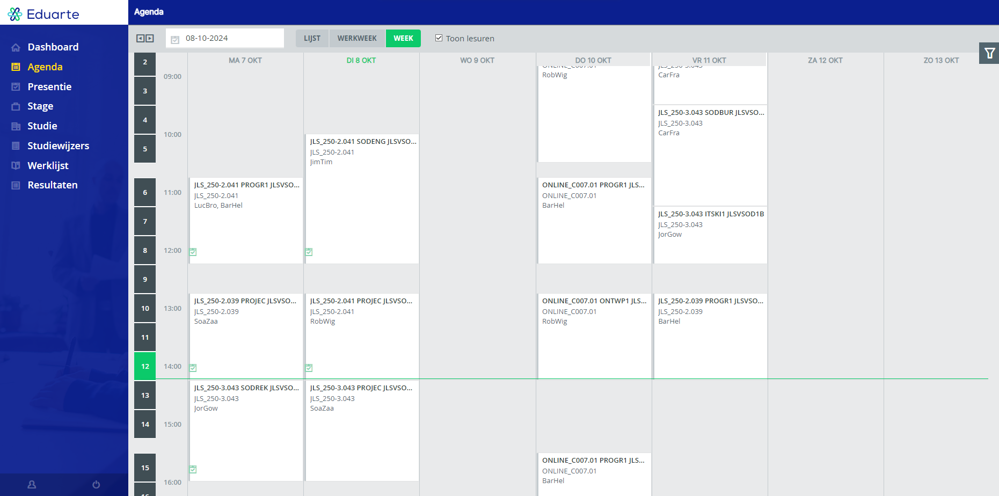
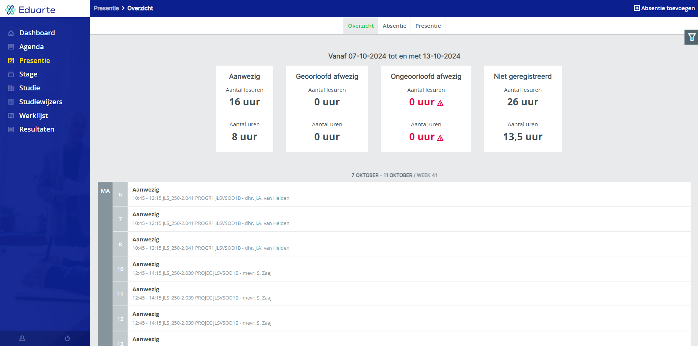

Wat is Eduarte?
Eduarte is een digitaal platform dat gericht is op het ondersteunen van docenten en studenten,
het helpt met het beheren en delen van informatie over leermaterialen en -activiteiten.
het word gebruikt voor het bijhouden van roosters en presentie.
Rooster en les locaties
Op Eduarte vind u het les rooster, de locatie en de docenten voor de lessen.
Ziekte melden en verlof
Op Eduarte kunt u ook informatie melden over ziekte en geoorloofd verlof aanvragen.
ziekmelden kan op de website door in het presentie scherm rechts boven op absentie toevoegen te clicken.
De Eduarte app
Eduarte heeft een app voor studenten en ouders deze vervult dezelfde functies als de website. De app is beschikbaar in de Google store en de Apple store.


